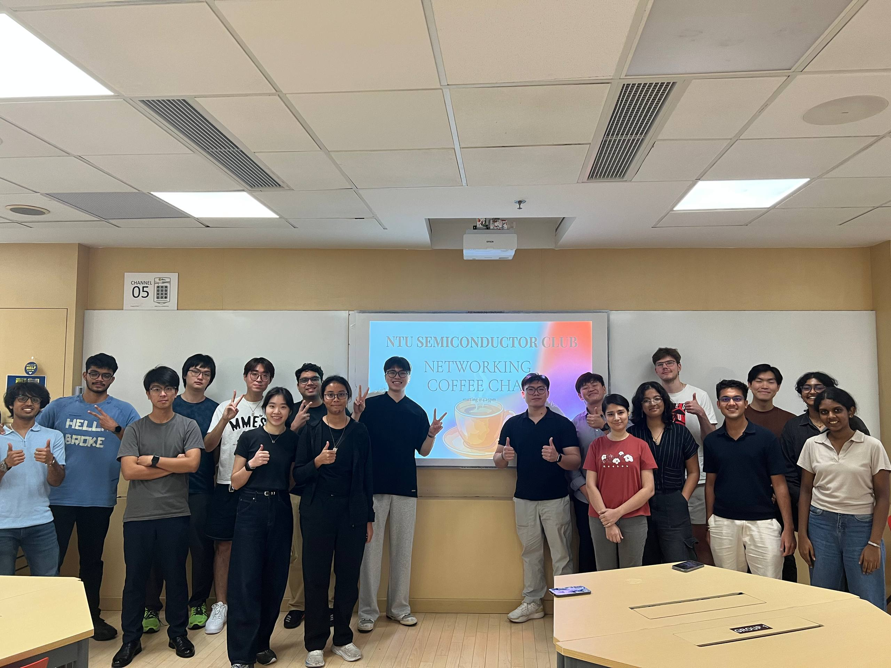
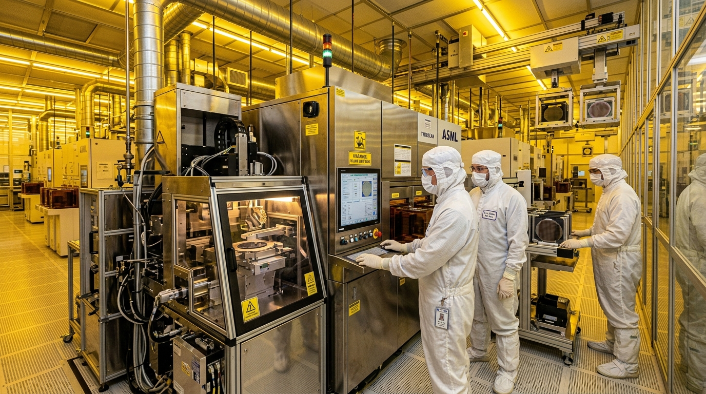
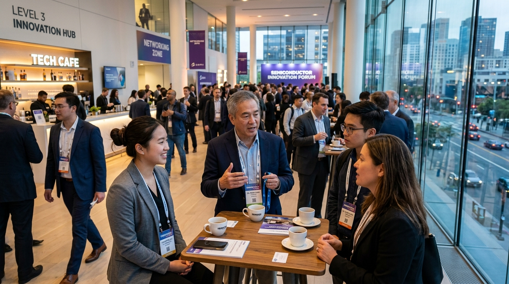
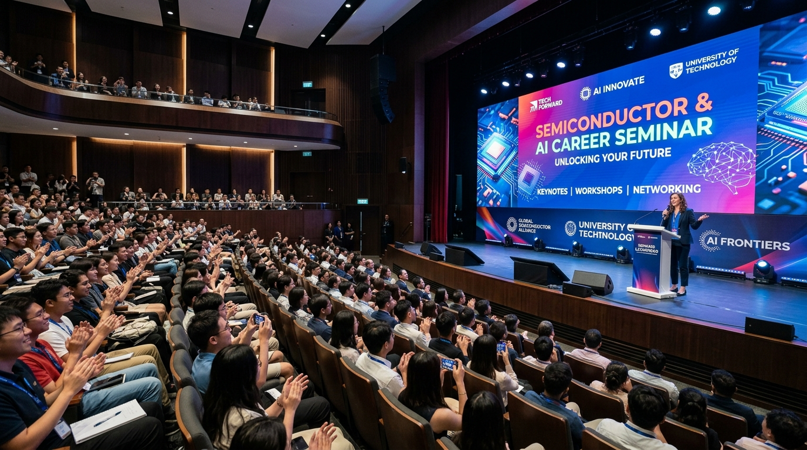

Technical Workshop Series

Full-Stack Semiconductor Workshop Series
Hands-on workshops covering IC design fundamentals, wafer fabrication steps, embedded systems programming, and CUDA GPU acceleration for AI workloads.
Register InterestIndustrial Site Visits & Cleanroom Tours
Highlights from our AY2025/26 Semester 2 industry visits and fab tours.

A*STAR IME Industry Visit
A deep dive into semiconductor R&D at A*STAR Institute of Microelectronics. Industry experts shared insights on advanced packaging and photonics, followed by guided tours of the photonics lab and packaging facilities.

AMD Industry Visit
Students visited AMD Singapore to observe real-world chip testing and bring-up. The tour covered System Level Test (SLT), Final Test, Failure Analysis, and AMD's CPU, GPU, and datacenter accelerator portfolio.

N2FC Fab Tour
Hosted two back-to-back cleanroom visits to the Nanyang NanoFabrication Centre (N2FC). Students gained first-hand exposure to cleanroom protocols, lithography tools, and processing equipment that transform wafers into chips.

GlobalFoundries Visit
Students toured commercial wafer fab facilities, observing silicon manufacturing operations, foundry engineering roles, and yield analysis in high-volume production.
Networking & Career Sessions

Networking Coffee Chat
An open exchange featuring small-group chats where club members shared industry insights, gathered feedback for future events, and built peer connections with students interested in semiconductors.

AI Career Launch Pad (with AI Singapore)
Partnered with AI Singapore (AISG) to demonstrate how hardware and systems knowledge translates into AI careers. Students were introduced to the AIIP and AIAP apprenticeship programs.